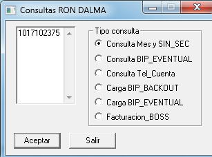

Menu Mainframe➔
Menu Adminfact➔
Menu Extracciones➔
Menu Mainframe➔
Menu Adminfact➔
Menu Extracciones➔
Pasos para la extracción Masiva
1.- En la herramienta Consultas Ronald, verificar si la cuenta a procesar concuerda con los datos que indica el analista,
ver siguiente modelo:


2.- Si no posee está información, por favor consulte en el TOAD con el usuario arbor, base de datos KP01CUS3
3.- Realizados los pasos de verificación de la cuenta, proceder a la carga en BIP_EVENTUAL con la
herramienta de Consultas Ronald:

4.- Accesamos al servidor srvft15, y procesamos crea_saldo_convenio.sh

5.- Realizará dos preguntas, la primera fecha con formato YYYYMMDD en nuestro caso colocamos 20140729,
y la segunda Introduzca ciclo o consecutivo, en nuestro ejemplo fue O9

6.- Ahora vamos a Control-M/Enterprise y antes de ordenar la cadena de extracción por favor verifcar que las condiciones
de fecha no existán, ver ejemplo:


7.- Ordenamos la cadena de extracción Masiva y adicionamos las condiciones para dar inicio, ver ejemplo:


8.- Finalizada la cadena de Extracción Masiva en Control-m/Enterprise, creamos ONDEMAND, tomando como variables el archivo generado en el Mainframe, ver ejemplo:

9.- En el Mainframe, usamos Control-M, procesamos el siguiente job, modificando los set var, ver ejemplo:

FIN DEL PROCESO